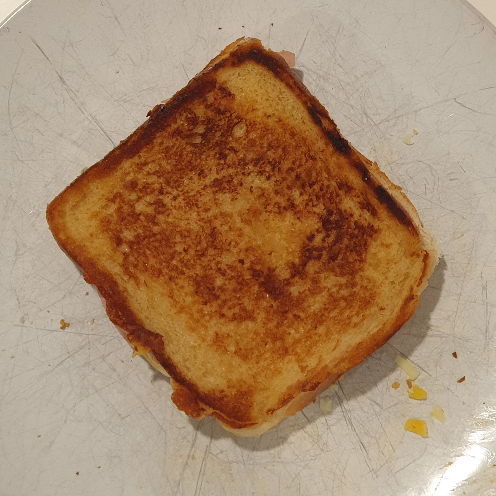

0008 - Croque-Monsieur poêlé
20-30min
20-30min
Pour 👤👤
Difficulté: ââ
Prix: 🪙🪙🪙
🱠Conservation
3j au réfrigérateur
♨ Peut-être réchauffé
Ingrédients
Temps de préparation:
5-10min
Temps de repos:
---
Temps de cuisson:
20-30min
Temps total:
25-40min
Matériel nécessaire:
Recette:
🧑‍🍳 Conseil du ptit’chef :